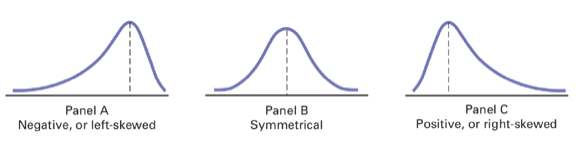

1 Measures of central Tendency
1.1 Arithmetic mean
The arithmetic mean, or mean of a set of measurements is defined to be the sum of measurements divided by the total number of measurements.
Usually, the population mean is denoted by \(\mu\) and the sample mean is denoted by \(\bar{y}\). The sample mean of a series is defined as,
\[ \bar{y}=\frac{\sum_iY_i}{n} \]
where, \(n\) is the number of observations.
Example A sample of \(n=15\) overdue accounts in a large department store yields the following amounts due,
| 55.2 | 4.88 | 271.95 |
| 18.06 | 180.29 | 365.29 |
| 28.16 | 399.11 | 807.8 |
| 44.14 | 97.47 | 9.98 |
| 61.61 | 56.89 | 82.73 |
The sample mean is computed as follows,
\[ \bar{y}= \frac{\sum_iY_i}{n}=\frac{55.20+18.06+ .... + 82.73}{15}=\frac{2483.56}{15}=165.57 \]
1.1.1 Some comments about the arithmetic mean
- It is the most common central tendency measure
- There exist only one mean of a dataset/series
- The value of the mean is influenced by the extreme values. Trimming or deleting extreme observations helps to reduce/omit that influence
- Means of samples from a single population can be combined to get the population mean.
- It is applicable to quantitative data only.
1.2 Median
The median of a set of measurements is defined to be the middle value when the measurements are arranged from lowest to highest. So, first we need to sort the dataset from lowest to highest.
\[ y_1 \leq y_2 \leq y_3 \leq .... \leq y_i \leq .. \leq y_n \]
Then, the median of a series will be,
- \(\frac{N+1}{2}\)-th observation if \(n\) is odd.
- Average of \(\left(\frac{N}{2}\right)\) and \(\left(\frac{N}{2}+1\right)\)-th observation if \(n\) is even.
1.2.1 Median: some comments
- It is the central value, 50 percent of the observations lie above it and the rest fall below it.
- There is only one median in a dataset
- It is not affected by extreme observations
- Medians of subsamples cannot be combined to get the median of the population.
- It is applicable to quantitative data only
- For group data, its value is rather stable even when the data are organized into different categories.
1.3 Mode
A mode of a set of measurements is defined to be the measurement that occurs most often, i.e. the highest frequency.
1.3.1 Mode: some comments
There can be more than one mode in a dataseries. Modes of the subsamples cann’t be used to determine to formulate the mode of the population It is applicable for both qualitative and quantitative data For grouped data, its value can change depending on the categories used.
1.4 Relationship: mean, Median, Mode
- When a variable is normally distributed, the mean, median, and mode are the same number.
- When the variable is skewed to the left (i.e., negatively skewed), the mean shifts to the left the most, the median shifts to the left the second most, and the mode the least affected by the presence of skew in the data.
- When the variable is skewed to the right (i.e., positively skewed), the mean is shifted to the right the most, the median is shifted to the right the second most, and the mode the least affected.

2 Measures of dispersion
2.1 Range
The range of a set of measurements is defined to be the difference between the largest and the smallest measurements of the set.
From the above dataset we are working on, the smallest values is 4.88 and the largest is 807.80. The range of the data would be,
\[ range = 807.80 - 4.88 = 802.92 \]
2.2 Variance and standard deviation
The variance of a set of measurements \(y_1, y_2, y_3, .... , y_n\), with a mean of \(\bar{y}_n\) is the sum of the squared deviations divided by \(n-1\). Symbolically,
\[ s^2 = \frac{\sum_{i=1}^n(x_i-\bar{x})^2}{n-1} \]
We are assuming, we are working with samples. In case of variance we will replace \(n-1\) with \(n\) in the denominator. Sample variance is denoted by \(s^2\) and the population variance is denoted by \(\sigma^2\).
Sample variance is an unbiased estimator of the population variance. That means, if we take different sub-samples from the population, then the average variance of those samples are (roughly) equal to the population variance.
The standard deviation is a set of measurements is defined to be the positive square root of the variance. \[ s = \sqrt{\frac{\sum_{i=1}^n(x_i-\bar{x})^2}{n-1}} \]
As mentioned before, sample standard deviation will be denoted by \(s\) and the population standard deviation is denoted by \(\sigma\). In real life, this difference is often ignored.
2.2.1 Variance and standard deviation: Example
| Product | Calories |
|---|---|
| Dunkin’s Donuts Iced Mocha Swirl latte (whole milk) | 240 |
| Starbucks coffee frappuccino blended coffee | 260 |
| Dunkin Donuts coffee coolatta | 350 |
| Starbucks Iced Coffee Mocha Espresso (whole Milk and whipped cream | 350 |
| Starbucks Mocha Flappuccino blended coffee (whipped cream) | 420 |
| Starbucks Chocolate Brownie Flappuccino blended coffee (whipped cream) | 510 |
| Starbucks Chocolate Flappuccino blended creme (whipped cream | 530 |
To calculate standard deviation and variance first we need to calculate the mean, then the squared differences
\[ \bar{x} = \frac{\sum_{i=1}^nX_i}{n} = \frac{2660}{7} = 380 \]
| Calories | \((x_i - \bar{x})\) | \((x_i - \bar{x})^2\) |
|---|---|---|
| 240 | -140 | 19600 |
| 260 | -120 | 14400 |
| 350 | -30 | 900 |
| 350 | -30 | 900 |
| 420 | 40 | 1600 |
| 510 | 130 | 16900 |
| 530 | 150 | 22500 |
| 76800 |
Putting all into the formula, we can get the variance.
\[
s^2 = \frac{\sum_{i=1}^n(x_i-\bar{x})^2}{n-1} = \frac{76800}{6} = 12800
\]
And, the standard deviation is,
\[ s = \sqrt{s^2} = \sqrt{12800} = 113.1371 \]
2.2.2 Characteristics of deviation measures
- The greater the spread or dispersion of the data, the larger the range, \(\sigma^2\) and \(\sigma\).
- The greater the concentration of the data around the central value, the smaller the range, \(\sigma^2\) and \(\sigma\).
- If the values are all the same (so that there are no variation in the data), the range, \(\sigma^2\) and \(\sigma\) will all equal to zero.
- None of the measures of variation can ever be negative.
2.3 The coefficient of variation
Unlike the range, \(\sigma\) and \(\sigma^2\), the coefficient of variation is a relative measure expressed as a percentage rather than units of a particular data. The coefficient of variation is equal to the standard deviation by the mean, multiplied by \(100\%\).
\[ CV = \left(\frac{\sigma}{\bar{x}}\right)\times 100\% \]
The coefficient of variation is particularly useful to compare the variability of two different datasets measured in two different units of measurements.
From the previous Starbucks data, the coefficient of variation can be calculated as,
\[ CV = \left(\frac{s}{\bar{x}}\right)\times 100\% = \frac{113.1371}{380} \times 100\% = 28.79\% \]
3 Confidence Intervals
The goal here is to estimate the sample information to estimate the population parameter of interest to assess the reliability of the estimate.
- The unknown population parameter (e.g. mean or proportion) that we are interested in estimating is called target parameter}.
- A point estimator of a population is a rule or formula that tells us how to use the sample data to calculate as single number that can be used as an estimate of the target parameter.
- An interval estimator or confidence interval is a formula that tells us how to use the sample data to calculate an interval that estimates the target parameter.
3.1 Confidence interval: large sample
CI for a \(\mu\): Normal \(z\)-statistic
Let \(x_1, x_2, ... , x_n\) be a random sample of \(n\) observations from a normally distributed population with unknown mean \(\mu\) and known \(\sigma^2\). Suppose that, we want a \(100(1-\alpha)\%\) CI of the population mean. Previously, we saw that,
\[ z = \frac{\bar{x}-\mu}{\sigma/\sqrt{n}} \]
has a \(N(0,1)\) distribution and \(z_{\alpha/2}\) is the value from the \(N(0,1)\) such that the upper tail probability is \(\alpha/2\). We use the basis algebra to find,
\[ 1 - \alpha = \mathbb{P} (-z_{\alpha/2} < z < z_{\alpha/2}) = \mathbb{P} \left(-z_{\alpha/2} < \frac{\bar{x}-\mu}{\sigma/\sqrt{n}} < z_{\alpha/2}\right) \]
which in turn,
\[ \mathbb{P} \left(-z_{\alpha/2} \frac{\sigma}{\sqrt{n}} < \bar{x} - \mu < z_{\alpha/2}\frac{\sigma}{\sqrt{n}}\right) = \mathbb{P} \left(\bar{x}-z_{\alpha/2} \frac{\sigma}{\sqrt{n}} < \mu < \bar{x}+z_{\alpha/2}\frac{\sigma}{\sqrt{n}}\right) \]
3.2 Central limit theorem
According to the Central Limit Theorem the sampling distribution of the sample mean is approximately normal for large samples. For a \(95\%\) confidence level it follows that,
\[ \mathbb{P} \left(\bar{x}-1.96 \frac{\sigma}{\sqrt{n}} < \mu < \bar{x}+1.96\frac{\sigma}{\sqrt{n}}\right) \]
The interval \(\bar{x} \pm 1.96\sigma_{\bar{x}}\) is called the large sample \(95\%\) confidence interval for the population mean \(\mu\). The term large sample refers to the sample being of sufficiently large size that we can apply the Central Limit Theory and the normal \(z\) statistic to determine the form of the sampling distribution of \(\bar{x}\). Empirical research suggests that a sample size \(n\) exceeding a value between 20 and 30 will usually yield a sampling distribution of \(\bar{x}\), that is normal.
If the sample means (e.g. \(\bar{x}_1, \bar{x}_3\) and \(\bar{x}_4\)) falls between the two lines on either side of \(\mu\), then the interval \(\bar{x} \pm 1.96\sigma_{\bar{x}}\) will contain \(\mu\); if \(\bar{x}\) falls outside the boundaries (e.g. \(\bar{x}_2\)), the interval \(\bar{x} \pm 1.96\sigma_{\bar{x}}\) will not contain \(\mu\).\ From the Empirical rule, we know that, the area under the normal curve (the sampling distribution of \(\bar{x}\) between these boundaries is exactly 0.95. Thus the probability that a randomly selected interval \(\bar{x} \pm 1.96\sigma_{\bar{x}}\), will contain \(\mu\) is equal to \(0.95\) or \(95\%\).\ Large sample interval estimator requires knowing the value of the population \(\sigma\). In most practical applications, the value of population \(\sigma\) is unknown. For large samples, in the absence of \(\sigma\), sample standard deviation \(s\) provides a good approximation to \(\sigma\).
4 Covariance and correlation
Covariance is a measure of the relationship between two random variables. The metric evaluates how much - to what extent - the variables change together. In other words, it is essentially a measure of the variance between two variables. However, the metric does not assess the dependency between variables.
\[ Cov (x, y) = \frac{\sum(x_i - \bar{x})(y_i - \bar{y})}{n} \]
For a sample covariance, we need to deduct 1 from the demoninator, i.e. \((n-1)\).
- Positive covariance: Indicates that two variables tend to move in the same direction.
- Negative covariance: Reveals that two variables tend to move in inverse directions.
Using covariance, we can only gauge the direction of the relationship (whether the variables tend to move in tandem or show an inverse relationship). However, it does not indicate the strength of the relationship, nor the dependency between the variables.
Correlation measures the strength of the relationship between variables. Correlation is the scaled measure of covariance. It is dimensionless. In other words, the correlation coefficient is always a pure value and not measured in any units.
\[ \rho = \frac{cov(x, y)}{\sigma_x \sigma_y} \]
- Correlation value ranges from \(-1\) to \(+1\). The correlation of zero indicates zero relationship.
- \(\rho_{x,y} = \rho_{y,x}\)
- The correlation is not synonimous to causation!
- More on this topic will be covered later in the degree program.
4.1 Percentiles
The \(p\)-th percentile of a set of \(n\)-measurements arranged in order of magnitude is that value that has at most \(p\%\) of the measurements below it and at most \((100-p)\%\) above it.
Percentiles are frequently used to describe the results of achievements test scores and the ranking of a person in comparison to the rest of the people taking the examination. Specific percentile of interest are the 25th, 50th and 75th percentiles; often called the lower quantile, the middle quantile (median) and the upper quantile respectively. Similarly, if we divide the data by 10 parts then we refer every part as deciles.